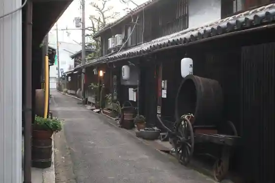
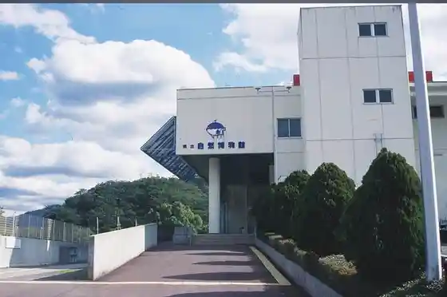
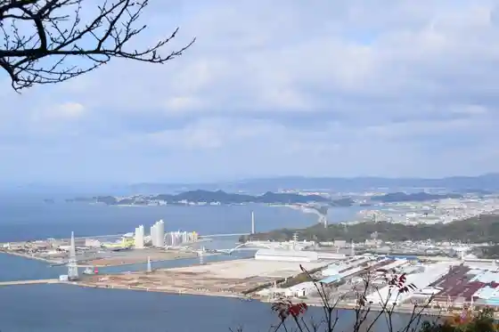
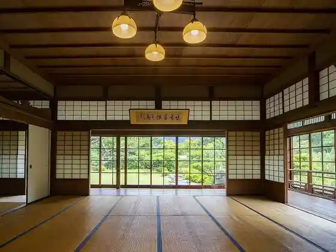

Japan / Wakayama / Kainan
Kainan
Kainan · Wakayama
Kainan
Highlighted on the Wakayama map.
Sights
Kuroe no Streetscape
Kainan, Wakayama · 073-483-8461 · Official / source link

Roadside Station Kainan Sakuasu
Kainan, Wakayama · 073-492-1093 · Official / source link
Wakayama Prefectural Shizen Museum
Kainan, Wakayama · 073-483-1777 · Official / source link

Fujishiro Shrine
Kainan, Wakayama · 073-482-1123 · Official / source link

Kon no Ura On Sanso Sono
Kainan, Wakayama · 073-482-0201 · Official / source link

Forest Park Ame Forest
Kainan, Wakayama · 073-484-2326 · Official / source link
Nagaho Tera
Kainan, Wakayama · 073-492-1030 · Official / source link
Kame Ike Park
Kainan, Wakayama · 073-484-2326 · Official / source link
Uga Bu Shrine
Kainan, Wakayama · 073-487-3285 · Official / source link
Kasuga Shrine
Kainan, Wakayama · Official / source link